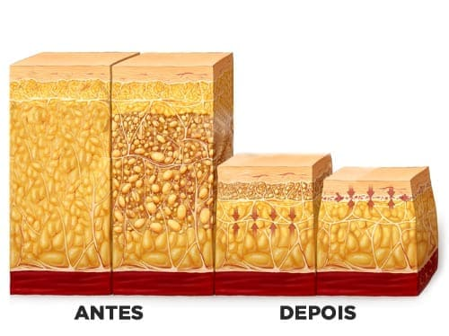

Juliana Mendes, Professora de 38 anos, viu seu peso chegar a 114,7 kg, mas nunca deu muita importância para a balança. Só percebeu que precisava mudar quando o excesso de peso começou a afetar seu casamento. Agora, ela revela como deu a volta por cima:
"Minha relação com a balança sempre foi complicada, especialmente depois que me mudei para outra cidade aos 17 anos. Ganhei muito peso e, desde então, fiquei presa no famoso efeito sanfona. Mas isso nunca me incomodou de verdade… pelo menos até certo ponto.
Depois de voltar para minha cidade natal, me casei e tive um filho. O peso extra só aumentava, e eu já não conseguia mais voltar ao meu corpo de antes. Meu marido, de maneira sutil, me incentivava a emagrecer, mas eu simplesmente não conseguia."
Quando queremos emagrecer, buscamos soluções por todos os lados—testamos dietas milagrosas, seguimos dicas da internet e, na maioria das vezes, só perdemos tempo e dinheiro.
Mas como eu consegui eliminar 31,8 kg em apenas 6 meses?
A resposta veio de onde eu menos esperava: uma dica da minha irmã, que mora nos Estados Unidos, no estado do Texas. Ela me contou que muitas pessoas por lá estavam emagrecendo de forma natural e, o melhor, sem sofrer com o temido efeito sanfona que sempre me perseguiu
Curiosa com tudo isso, comecei a pesquisar mais a fundo e fiquei surpresa ao descobrir que, após diversos testes e comprovações, a ANVISA já havia autorizado sua venda no Brasil. O mais incrível? Centenas de pessoas já estavam tendo resultados impressionantes! Vi relatos de gente que perdeu 5kg, 16kg, 10kg, até 22kg…
Sem pensar duas vezes, acessei o site oficial do SLIMSY e comprei um kit com 3 potes para testar. O que aconteceu me deixou de boca aberta: em apenas duas semanas, minha cintura reduziu 9 cm! Fiquei tão animada que resolvi investir de vez e garanti logo o kit com 5 potes do SLIMSY para continuar minha transformação!
No final do terceiro pote, a mudança já era nítida: menos 12 kg na balança e, finalmente, voltando a vestir tamanho 42. Mas um detalhe me motivou ainda mais: ao comprar qualquer kit, recebi e-books gratuitos com receitas saudáveis e detox. Decidi testar algumas para potencializar os resultados, já que queria acelerar ainda mais o processo.
Segui tudo corretamente: tomava 2 cápsulas por dia, sempre 30 minutos antes do café da manhã ou do almoço. Ajustei levemente minha alimentação e, ao final do tratamento, estava completamente transformada—não só no corpo, mas também na autoestima!
Quando meu marido percebeu minha transformação em tão pouco tempo, ele ficou impressionado. Consegui eliminar 21 kg, reduzi completamente minha compulsão por doces e, pela primeira vez em anos, senti disposição para me exercitar e levar uma vida mais equilibrada.
Hoje, visto tamanho 38, e a sensação de entrar em uma loja e escolher essa numeração é indescritível – só quem já passou por isso sabe o quanto é gratificante!
Além da mudança física, minha relação também se fortaleceu. Meu marido não só nota a diferença, como está sempre me enchendo de elogios. Nossa conexão voltou a ser como antes, e isso, para mim, não tem preço!
Minhas pernas ficaram muito mais definidas, a celulite reduziu bastante e minha pele está muito mais uniforme. Aquela gordura incômoda entre as coxas desapareceu, e até meus braços estão mais firmes.
No começo, confesso que fiquei cética, achando que era só mais um daqueles produtos que prometem milagres e não entregam nada. Mas quando comecei a ver depoimentos reais – até mesmo de pessoas conhecidas na mídia – decidi dar uma chance. E hoje, nem preciso dizer nada… meu antes e depois fala por si só!
Fomos atrás para entender o que torna a fórmula do SLIMSY tão poderosa e por que tantas pessoas estão emagrecendo de forma rápida e saudável com ele.
O que realmente faz esse produto ser tão eficaz? Confira a seguir!
Após 7 anos de pesquisas científicas e um sucesso impressionante nos Estados Unidos, especialmente no Texas, onde ajudou mais de 210 mil pessoas a perder peso de forma acelerada, um renomado laboratório trouxe essa fórmula inovadora para o Brasil – e a cada dia mais pessoas estão aderindo.
SLIMSY atua diretamente no organismo: reduz o apetite, controlando a compulsão alimentar, inclusive por doces, impede a absorção excessiva de gorduras, acelera o metabolismo e intensifica a queima de gordura. O resultado? Uma perda de peso e medidas muito mais rápida e eficaz do que qualquer método tradicional.

A fórmula avançada do SLIMSY age no organismo de forma semelhante a tratamentos de alto custo. Suas fibras, ao entrarem em contato com a água, formam um gel no estômago, proporcionando sensação de saciedade, reduzindo a fome e controlando o apetite de maneira natural.

Pense em um balão cheio de água – ele não deixa espaço para o ar entrar. Agora, imagine esse mesmo efeito dentro do seu estômago: ao entrar em contato com líquidos, SLIMSY se transforma em um gel natural, preenchendo o espaço e enviando sinais de saciedade para o cérebro. O resultado? Menos fome, menos exageros e uma perda de peso impressionante!
Com SLIMSY, você pode:
✅ Acelerar a queima de gordura, ativando o metabolismo de forma
natural
✅ Eliminar até 4 kg em apenas 4 semanas, sem dietas restritivas
✅ Reduzir o apetite, controlando aquela vontade constante de
beliscar
✅ Melhorar o funcionamento intestinal, combatendo inchaço e
prisão de ventre
✅ Auxiliar na redução do colesterol, equilibrando a saúde do
organismo
✅ Atenuar a celulite, deixando a pele mais lisa e uniforme
✅ Diminuir a retenção de líquidos, reduzindo o inchaço corporal
✅ Desintoxicar o corpo, eliminando toxinas que dificultam o
emagrecimento
E mais: a fórmula exclusiva de SLIMSY também ajuda a melhorar a elasticidade da pele, combatendo a flacidez e deixando seu corpo mais firme e definido!
SLIMSY é um produto 100% seguro, desenvolvido para promover o emagrecimento de forma saudável e sem efeitos colaterais. Além de ajudar milhares de mulheres a eliminar a celulite, sua fórmula inovadora também reduz até 72% da flacidez no abdômen, braços e coxas, deixando a pele mais firme e tonificada.
Já imaginou conseguir emagrecer de forma saudável e se livrar de vez daquelas gordurinhas indesejadas que te incomodam e te fazem sentir desconfortável com o próprio corpo?
Aquelas sobras de gordura nos braços, que se movimentam sempre que você gesticula, deixando você insegura nas fotos e no dia a dia… E a barriguinha que insiste em marcar as roupas, mesmo quando você tenta disfarçar?
Agora, pense na sensação de olhar no espelho e ver um corpo mais firme, tonificado e do jeito que você sempre quis!

Já pensou nunca mais passar pelo constrangimento de entrar em uma loja, se apaixonar por uma roupa na vitrine e ouvir do vendedor: "Infelizmente, não temos no seu tamanho"?
Agora, imagine eliminar 6 kg já nas primeiras 4 semanas, ver seu corpo se transformar diante do espelho e começar a receber elogios de quem convive com você. Seu cônjuge, amigos e familiares notando sua mudança, perguntando "O que você está fazendo para emagrecer tão rápido?", impressionados com sua nova versão mais leve, confiante e cheia de energia!

E o que descobrimos foi surpreendente! O SLIMSY passou por uma análise criteriosa e, pela primeira vez, um produto atingiu a classificação máxima de 5 estrelas em nossa avaliação.
Confira os resultados:
Testes Realizados:
SLIMSY ★ ★ ★ ★ ★
Pontos de Destaque
- Não causa as famosas "Diarréias de Gordura";
- Os benefícios foram comprovados cientificamente;
- Potencializa a queima de gordura com termogênicos naturais;
- Estimula a redução do colesterol, reduz os níveis de glicose e desencadeia expressiva perda de peso.
- 97% dos clientes que fizeram uso relataram estarem SATISFEITOS com os resultados!
SLIMSY possui eficácia comprovada e aprovação da ANVISA

Todos sabemos que, para um produto ser comercializado legalmente, ele precisa passar por rigorosos testes e ser aprovado pelos órgãos de regulamentação, como a ANVISA e o Ministério da Saúde (RDC 240/218).
SLIMSY foi desenvolvido com uma fórmula exclusiva que já fez sucesso em diversos países. No entanto, para ser vendido no Brasil, ele precisou passar por uma nova bateria de testes para garantir sua eficácia e segurança. Somente após análises criteriosas, a ANVISA validou seus resultados, comprovando que o produto realmente funciona e pode ser comercializado de forma segura no país.
Para entender melhor o que torna SLIMSY tão eficaz, conversamos com um dos especialistas responsáveis pela sua formulação e sucesso.
Nossa equipe entrou em contato diretamente com o laboratório responsável por SLIMSY para descobrir o que faz essa fórmula ser tão eficaz. Conseguimos uma rápida entrevista com um dos especialistas envolvidos no desenvolvimento do produto, que esclareceu algumas dúvidas importantes.
Redação: SLIMSY funciona para homens?
Sim! A fórmula foi desenvolvida para atender tanto homens quanto mulheres. No entanto, as mulheres costumam buscar mais esse tipo de solução, pois, biologicamente, possuem um metabolismo um pouco mais lento que o dos homens, tornando o emagrecimento mais desafiador.
Redação: Quem tem pressão alta pode tomar?
Sim! SLIMSY é composto exclusivamente por ingredientes naturais, cuidadosamente combinados para garantir segurança e eficácia. Ele é 100% aprovado pela ANVISA, conforme as diretrizes da RDC 240, e pode ser utilizado por qualquer pessoa que busca perder peso, incluindo aquelas que precisam de cuidados especiais com a saúde.
Redação: É preciso prescrição médica para o uso?
Não! SLIMSY é classificado como um suplemento alimentar totalmente regulamentado pela ANVISA, podendo ser adquirido sem receita médica diretamente através do site oficial.
Recebemos centenas de relatos de leitores compartilhando seus resultados impressionantes com SLIMSY. Para comprovar sua eficácia, realizamos um teste real com uma voluntária, e o resultado fala por si só: confira o antes e depois que prova que SLIMSY realmente funciona!
Teste com voluntários:
Depois de ler inúmeros relatos e conhecer de perto mulheres que tiveram transformações incríveis com SLIMSY, Patrícia Fernandes decidiu ir além. Movida pela curiosidade, ela se prontificou a testar na prática esse suplemento que está chamando a atenção e conquistando celebridades.
Será que SLIMSY realmente entrega os resultados impressionantes que promete? Vamos aos fatos!
Para isso, Patrícia entrou em contato com o fabricante de SLIMSY e, com o apoio da equipe de produção, decidiu testar e divulgar os resultados em primeira mão.
Para avaliar a eficácia do suplemento, Patrícia utilizou SLIMSY por 60 dias. Os resultados foram surpreendentes. Confira:
Primeiros Dias:
Após 3 dias de espera, o produto chegou à minha casa. Comecei a tomar SLIMSY e, logo nos primeiros dias, percebi algo inesperado: minha energia aumentou significativamente e aquela vontade incontrolável de beliscar a todo momento simplesmente desapareceu.
Descobri que um dos efeitos adicionais de SLIMSY é justamente diminuir a compulsão por doces e equilibrar o apetite. Eu já me sentia tão bem que continuaria tomando só pela disposição extra que ele me deu. O mais impressionante? Não mudei nada na minha rotina – não fazia exercícios e continuava comendo normalmente.
No 7º dia, decidi conferir minhas medidas. Não acreditei no que vi! Já tinha reduzido 2 tamanhos no manequim. Eu havia tentado inúmeros métodos de emagrecimento antes, mas nenhum me trouxe resultados tão rápidos assim nos primeiros dias.
Após 21 Dias:
Depois de 21 dias usando SLIMSY, senti que minha energia estava como há 10 anos atrás. Além disso, minhas noites de sono melhoraram drasticamente – acordava renovada, sem aquele cansaço matinal que me perseguia há anos.
Descobri que isso acontece porque, segundo o laboratório, SLIMSY ajuda o corpo a eliminar toxinas, queimar glicose e reduzir os níveis de colesterol.
Mas a melhor parte foi ao experimentar roupas que não me serviam há tempos… Entrei em calças jeans e blusinhas que estavam esquecidas no armário!
Eu nunca tinha visto resultados tão rápidos na minha vida – nem mesmo com fórmulas controladas. Já tinha tentado de tudo, mas...
A partir desse momento, ficou claro para mim: SLIMSY realmente funciona!
Após 30 dias:
Com 1 mês de uso de SLIMSY, passei do manequim 48 para o 44. Naquele momento, ficou claro o motivo de tanto burburinho nas redes sociais e na mídia sobre esse suplemento.
Fui experimentar algumas roupas antigas que estavam guardadas há anos e, para minha surpresa, elas voltaram a servir perfeitamente! Era como recuperar um guarda-roupa inteiro sem precisar gastar nada com novas peças.
Parecia bom demais para ser verdade, mas ali estava eu, diante do espelho, vendo meu corpo transformado!
Após 60 dias:
Depois de 2 meses usando SLIMSY todos os dias, posso afirmar: os resultados foram impressionantes!
Eliminei 6,8 kg de gordura pura – e aqui está um detalhe importante: muitas dietas fazem você perder líquidos e massa muscular, o que leva ao temido efeito sanfona. Mas no meu caso, a perda foi de gordura real, o que fez com que minhas roupas ficassem muito mais largas e minha celulite praticamente desaparecesse.
Com o corpo mais enxuto, finalmente pude usar qualquer tipo de roupa que quisesse, sem precisar me preocupar com peças apertadas ou que marcassem demais.
Empolgada com os resultados incríveis, continuei usando SLIMSY. Hoje, já fazem quase 5 meses, e meu antes e depois falam por si só: no total, eliminei 14,7 kg de gordura.
Me sinto mais confiante, saudável e realizada. Tenho certeza de que muitas mulheres estão vivendo essa mesma transformação, porque SLIMSY funciona – e esse é o grande segredo do seu sucesso!
E o melhor de tudo… sem efeito sanfona!
Após finalizar o experimento, tirei 4 semanas de férias e decidi não levar SLIMSY comigo. No começo, fiquei com receio de voltar a ganhar peso por conta da rotina mais desregrada, mas para minha surpresa, consegui manter o corpo enxuto sem esforço!
Diferente de outros métodos de emagrecimento, SLIMSY não causa efeito sanfona, pois sua fórmula age diretamente na queima de gordura e no equilíbrio do metabolismo.
O que posso dizer? SLIMSY cumpriu tudo o que prometeu e superou todas as minhas expectativas!
Normalmente, não indicamos produtos sem uma análise rigorosa, mas os resultados foram tão expressivos que sentimos que nossos leitores mereciam conhecer essa descoberta. Além disso, o laboratório responsável pela fabricação de SLIMSY no Brasil está tão confiante na eficácia do produto que resolveu oferecer um super desconto exclusivo para que nossos leitores possam testar e comprovar os resultados por si mesmos!
Atenção! Estoque limitado!
Segundo o fabricante, SLIMSY só pode ser adquirido pelo site oficial e não é vendido em farmácias. A alta demanda tem feito os estoques se esgotarem rapidamente, então, se você deseja garantir o seu, é melhor agir rápido!
RESULTADOS GARANTIDOS OU SEU DINHEIRO DE VOLTA.
Desconto de até 60% para nossos Leitores
Atenção: Ganhe 60% de desconto, frete GRÁTIS e parcelamento em 12x, clicando no botão abaixo:
Clique AQUI para Experimentar SLIMSY
 Atualização:
Atualização: